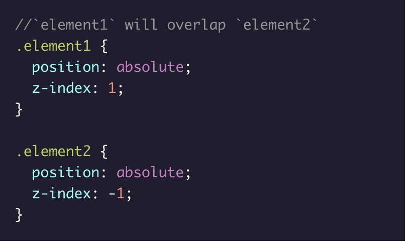
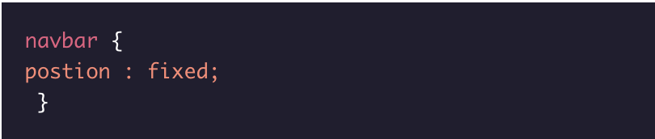
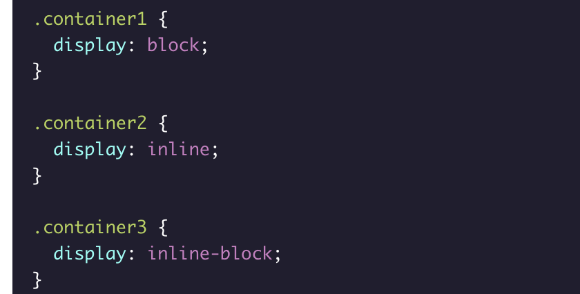
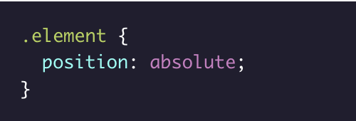
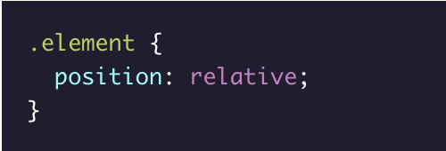
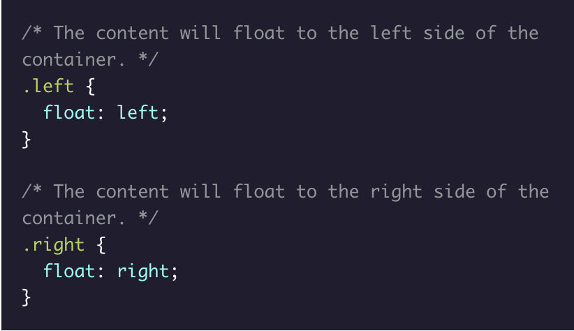
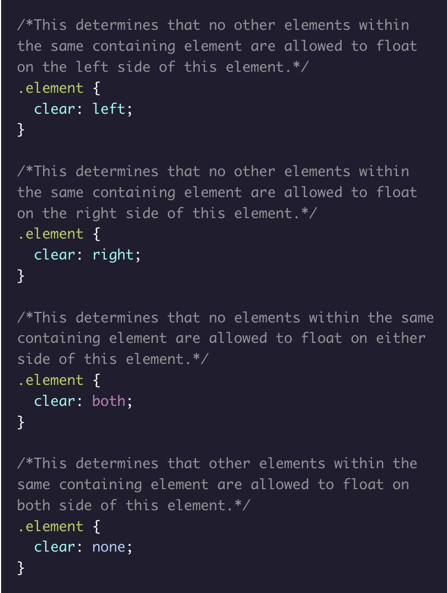

Display & Positioning
| Topic | Property/Attribute | Description | IMPORTANT |
|---|---|---|---|
| Display And Positioning | |||
|  | CSS z-index property | The CSS z-index property specifies how far back or how far forward an element will appear on a web page when it overlaps other elements. | The z-index property uses integer values, which can be positive or negative values. The element with the highest z-index value will be at the foreground, while the element with the lowest z-index value will be at the back. |
|  | Fixed CSS Positioning | Positioning in CSS provides designers and developers options for positioning HTML elements on a web page. The CSS position can be set to static, relative, absolute or fixed. When the CSS position has a value of fixed, it is set/pinned to a specific spot on a page. The fixed element stays the same regardless of scrolling. The navigation bar is a great example of an element that is often set to position:fixed;, enabling the user to scroll through the web page and still access the navigation bar. | When the CSS position has a value of fixed, it is set/pinned to a specific spot on a page. The fixed element stays the same regardless of scrolling. |
|  | CSS Display Property | The CSS display property determines the type of render block for an element. The most common values for this property are block, inline, and inline-block. | Block-level elements take up the full width of their container with line breaks before and after, and can have their height and width manually adjusted. Inline elements take up as little space as possible, flow horizontally, and cannot have their width or height manually adjusted. Inline-block elements can appear next to each other, and can have their width and height manually adjusted. |
|  | CSS Position: ABSOLUTE | The value absolute for the CSS property position enables an element to ignore sibling elements and instead be positioned relative to its closest parent element that is positioned with relative or absolute. The absolute value removes an element entirely from the document flow. | By using the positioning attributes top, left, bottom and right, an element can be positioned anywhere as expected. |
|  | CSS Position: relative | The value relative of the CSS position property enables an element to be positioned relative to where it would have originally been on a web page. The offset properties can be used to determine the actual position of the element relative to its original position. Without the offset properties, this declaration will have no effect on its positioning, it will act as the default value static of the position property. | |
|  | CSS Float Property | The CSS float property determines how far left or how far right an element should float within its parent element. The value left floats an element to the left side of its container and the value right floats an element to the right side of its container. For the property float, the width of the container must be specified or the element will assume the full width of its containing element. | |
|  | The CSS clear Property | The CSS clear property specifies how an element should behave when it bumps into another element within the same containing element.The clear is usually used in combination with elements having the CSS float property. This determines on which sides floating elements are allowed to float. |